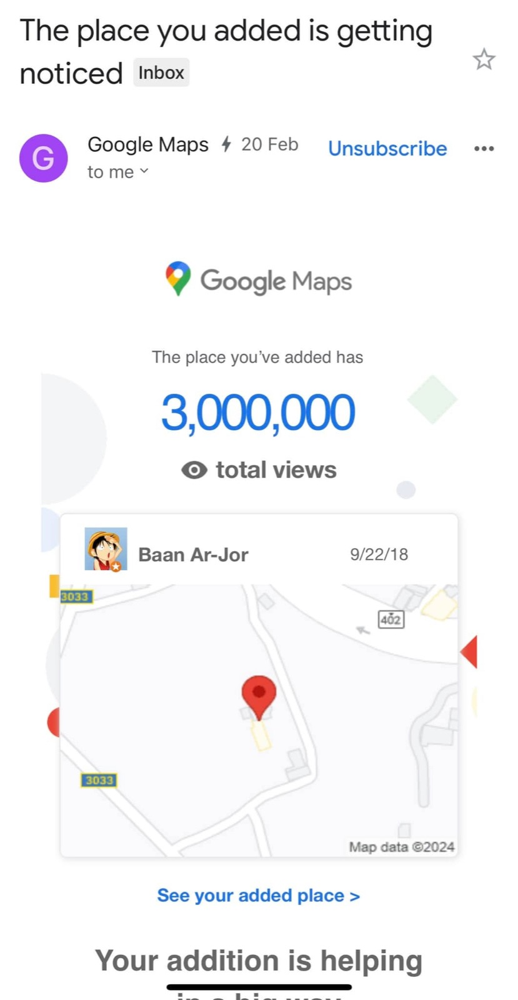

2567 · สังคม · เหตุการณ์
บ้านอาจ้อยอดวิวทะลุ 3 ล้าน เปิดปีกใหม่ "ฮก" รับปีมังกร

3,000,000 views แล้ววว 😇🧧
ขอบคุณทีมงานบ้านอาจ้อ ลูกค้าทั้งไทย ต่างชาติ พี่ๆ น้องๆเพื่อนๆ ทุกคนนะครับ ที่คอยเป็นกำลังใจ สนับสนุน ช่วยกันอุดหนุน บอกต่อ จนบ้านอาจ้อ ร้านโต๊ะแดง มาไกลถึงวันนี้ 😇❤️
ไม่รู้ว่าเป็นเรื่องบังเอิญมั้ย ที่ฝันว่าจะสยายปีกบ้านอาจ้ออีกข้าง เพื่อความสมดุลและสมบูรณ์ ซึ่งบังเอิญทำได้สำเร็จตกในปีมังกรพอดิบพอดี 🥰 ตั้งใจตั้งชื่อปีกด้านขวานี้ว่า #ฮก 🧧 ซึ่งหมายถึงโชคดี และตัวอักษรจีนนำมากลับหัวตามความเชื่อว่า ความโชคดีมาถึงเราไม่สิ้นสุด ☀️
หวังว่าโปรเจคต่างๆ ต่อจากนี้ ที่ทีมงานฝันไว้จะโชคดี และเป็นจริงตามที่ตั้งใจไว้ทุกประการ 💪🔥
ยังคงขอกำลังใจจากทุกคนเพื่อเดินหน้าต่อ ✨ ขอบคุณอีกครั้งนะ 😇❤️
#tohdaeng1936 🌶️
#หว่ออ้ายหนี่ ❤️
#ฮก 🧧
#มูลนิธิบ้านอาจ้อ 😇
#บ้านอาจ้อ 💕